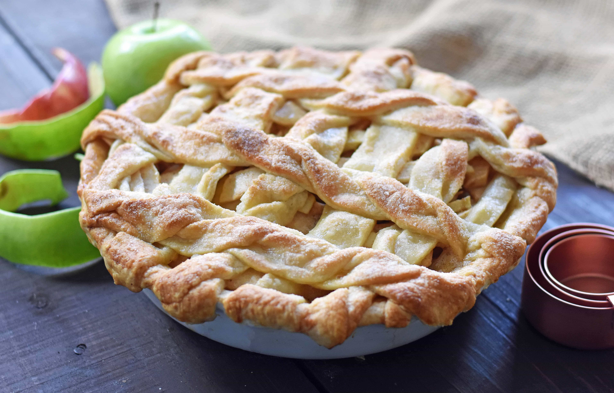

Apple pie :

An appetizing apple pie
Ingredients :
Salted Caramel Sauce:
- 1 cup Sugar
- ½ cup Water
- ½ cup Butter
- ½ cup Heavy Cream
- 1 teaspoon Sea Salt
Apple pie:
- 1 (14.1 ounce) package pastry for a 9-inch double-crust pie
- ¾ cup white sugar, or more to taste
- 1 teaspoon ground cinnamon
- 6 cups thinly sliced apples
- 1 tablespoon butter
Steps :
Salted Caramel Sauce:
- Step 1:In medium sized pot, whisk together sugar and water and cook over medium-low heat for 3 minutes or until sugar is dissolved.
- Step 2:Add butter and let cook for 9-11 minutes or until a golden brown color begins to form. Do not stir but watch carefully.
- Step 3:Once the caramel is a warm copper color, remove from heat. Add ½ cup heavy cream. Be careful as it will bubble. Stir in salt. Pour into jar and place in refrigerator to chill for 1 hour.
Apple pie: